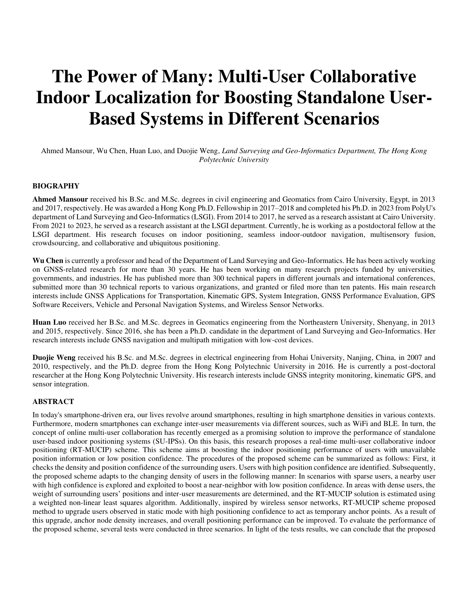
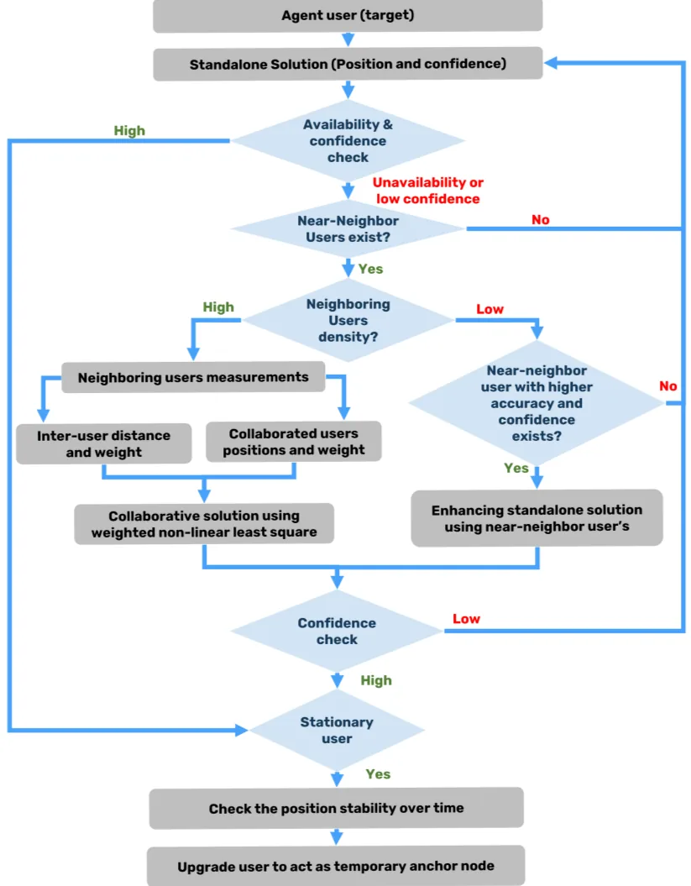

The Power of Many: Multi-User Collaborative Indoor Localization for Boosting Standalone User-Based Systems in Different Scenarios
Paper preview

Research story and quick reading guide
This paper tells a collaboration story. Many smartphone-based IPS solutions treat each user as an isolated positioning unit. A user walks, the device senses Wi-Fi and motion, and the algorithm estimates that user’s location independently. This is simple, but it wastes an important resource: the presence of other users moving through the same environment. When several users are present, their measurements, relative encounters, and shared spatial context can provide extra constraints that a standalone system does not have. The Power of Many asks how indoor localization can improve when users are no longer treated as separate islands.
The main idea is that multiple users can help each other indirectly. If one user has a stronger localization condition, or if two users are spatially related through proximity or shared observations, the system can use that information to strengthen the positioning solution. The paper therefore shifts the perspective from single-user localization to cooperative and crowd-enhanced localization. This is important because indoor environments are often difficult: Wi-Fi signals fluctuate, inertial sensors drift, and standalone estimates can become unreliable. Collaboration creates an additional layer of information that can reduce ambiguity.
The contribution can be read through the flow single-user uncertainty → multi-user encounter/context → shared correction → stronger positioning. This flow is useful because it shows how collaboration works as a reliability resource. The paper is not only about adding more data; it is about using relationships among users to improve localization. This includes the broader idea that human mobility in indoor spaces is not random noise but can be used as a structural source of information.
The paper is also relevant to deployment because real buildings are social environments. Shopping malls, campuses, stations, offices, hospitals, and public venues usually contain many users. If an IPS can use their collective presence, the system may become more robust than one that depends only on each device individually. This is closely related to crowd-powered IPS, cooperative positioning, and multi-agent localization.
For a fast visual understanding, the paper can be represented as user A + user B + user C → shared spatial evidence → improved localization. Each user contributes partial information; the system combines these partial views into a stronger estimate. This makes the work useful for authors discussing cooperative localization, collaborative smartphone positioning, multi-user constraints, and the benefits of crowd-level information in IPS.
This paper should be cited when the argument requires a reference for the idea that indoor localization can be improved by exploiting multiple users jointly rather than positioning each user independently. It is particularly suitable for discussions of cooperative IPS, crowd-enhanced localization, multi-user PDR/fingerprinting systems, and real-world scenarios where the presence of many users can become a positioning advantage.
Extended summary
This paper proposes a real-time multi-user collaborative indoor positioning scheme that uses surrounding users, inter-user measurements, and temporary anchors to improve standalone user-based IPS in sparse and dense scenarios.
Key visual explanation
These selected visuals help readers understand the method quickly before reading the full paper.

When to cite this paper
- multi-user collaborative IPS is discussed
- inter-user measurements support indoor localization
- temporary anchor users improve positioning confidence
- standalone user-based indoor positioning is enhanced through cooperation
Keywords
multi-user collaborationcollaborative indoor localizationindoor positioninginter-user measurementstemporary anchorsweighted nonlinear least squares
Official link
Add DOI or official URL when available.
For publisher-restricted articles, link to the DOI or an allowed accepted manuscript rather than uploading a restricted PDF.
BibTeX
@inproceedings{Mansour2023the,
title = {The Power of Many: Multi-User Collaborative Indoor Localization for Boosting Standalone User-Based Systems in Different Scenarios},
author = {Ahmed Mansour and Wu Chen and Huan Luo and Duojie Weng},
year = {2023},
journal = {ION GNSS+},
}Research-area connection
This page is connected to the homepage research-area map so readers can move from the individual paper to the broader research program.